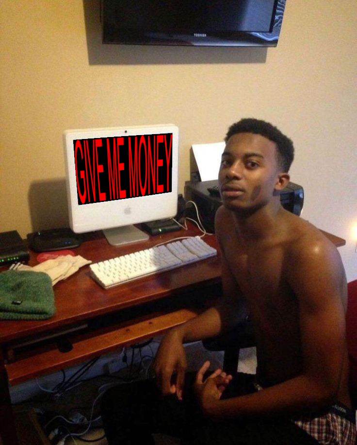

|
Save these into your spotify local files folder and the playlist should work Good youtube tutorial on how to do that E-transfer me money if this helped you ---> probstevan7@gmail.com  Golly, where do I even begin. Well, I guess I should start by saying the impact Mr. Carter has left on me. His music has made me so so so so so so so so so so so happy. Every day I wake up, and all I want to do is listen to Mr. Whole Lotta Reds music. He makes me feel complete. My whole life, I walked around like I was complete, but i wasn't until I listened to Playboi Carti. No matter how I feel, whether I'm happy, sad, angry, confused, depressed, or lost, I can always listen to Carti. Not only has he made incredible music, but he has also helped to show me other incredible artists. I would have never known about Destroylonely, Ken Carson, Homixide Ben, and Homixide Meeche without my beautiful goat, Sir Cartier. Speaking of beautiful, Carti truly is the most cute, adorable, and beautiful person I have ever laid eyes on. His ability to look the best in every picture he is in is incredible. Speaking of incredible, his work as a feature artist is nothing to scoff at. His ability to make songs so much better is remarkable. Songs like FEIN, Popular, Pain 1993, Baguetts in the Face, Flex Up, 100 Racks, Of Course We Ghetto Flowers, Mattress REMIX, Get Dripped, Switching Lanes, Minute, Perry Aye, Frat Rules, RAF, Beam, Beet, London Town, Summer Bummer, Ain't Doin That, Check, Saucin', Pump Fake, YSL, Fee, Iknowuknow, 4 The People, Peepin, 4Tspoon, Fake AF, Come Here!, Plug, 2Door, Dem Callin, Freestyle/ 4 The People, Snow, Ghost, Left Right, Dallas, Hard to Breathe, Party Song, Spike Lee, No Presure, Booted Up, Speedy Gonzales, Lil Pill, Str8 Up, Scorin, Green & Purple, Mad Men, Blowin Minds, Walk on Water, Get the Bag, FYBR, What Happens, Check, Vlone Thug, Still Kickin, Butterfly Coupe, 100 Rounds REMIX, Crumbs Hit a Lick, Buck Shots, Beam, Uh Oh, Top 5, Houdini, Same Yung N****, Almeda, Ciggy Said Light, They Afraid of You, Want my M's, Paid in Full, Earfquake, What Type of Shit You On, Homixide, Junya, Junya PT2, Fuk Sumn, and Carnival are all songs Playboi Carti was able to make so much better. In many ways we wouldn't be where we are in music without my dead goat Playboi Carti. With incredible released and unreleased projects like Killing Me Softly, THC: THE HIGH CHRONICLES, Kream, Young Misfit, SenSation, FACE, The Red Tape, death in tune, Chucky, In Abundance, Playboi Carti, Die Lit, and Whole Lotta Red are just examples of an incredible arsenal of albums and EPs that would change mUsic forever. In conclusion, Playboi Carti is the greatest to ever do it. He is my reason to wake up in the morning. My reason to smile. My reason to be happy. Playboi Carti is MUSIC. |